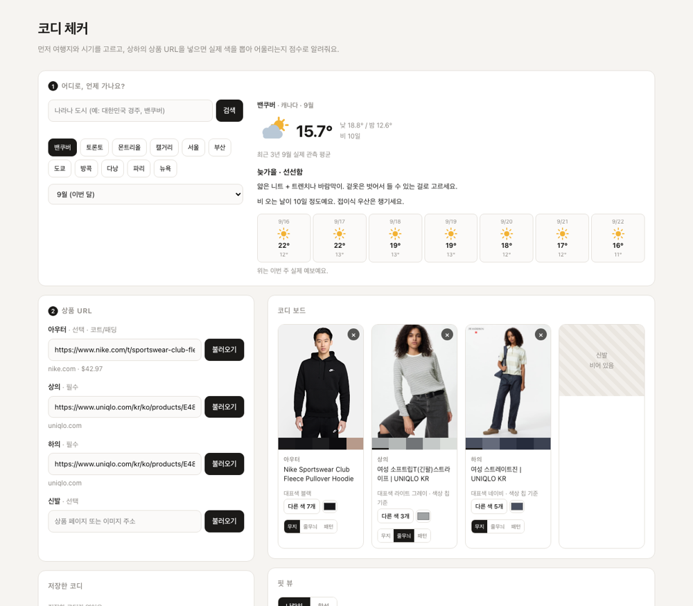
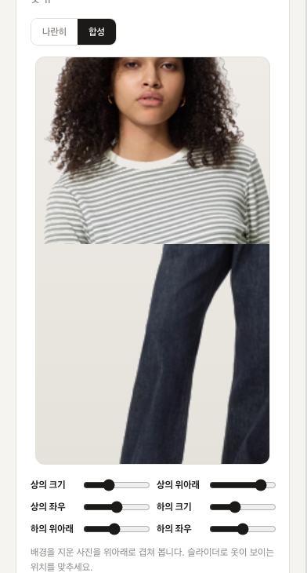
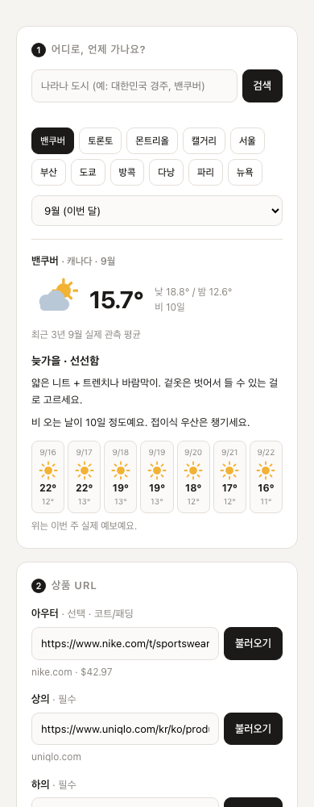

코디 체커는 웹에서 설치 없이 바로 쓸 수 있어요. 이 페이지는 내 맥에 직접 설치해서 돌리고 싶을 때만 보면 됩니다.
직접 돌리면 상품 페이지를 내 맥이 직접 가져오고, 사진도 내 컴퓨터에만 저장됩니다.
웹에서 바로 쓰기 폴더 내려받기 (.zip) GitHub



coordi-checker-main.zip 이 저장돼요.
더블클릭해서 풀고, 원하는 위치(예: 서류 폴더)로 옮겨 두세요.start.command 를 더블클릭합니다
검은 터미널 창이 열리고 브라우저가 자동으로 뜹니다.
처음 한 번만 준비 작업으로 1~2분 걸려요. 그다음부터는 몇 초면 열립니다.start.command 를
우클릭(또는 control+클릭) → 열기 로 한 번만 실행하면 그다음부터는 더블클릭으로 됩니다.
터미널 창을 닫거나 Ctrl+C 를 누르면 꺼집니다. 다시 켤 때도
start.command 더블클릭이에요. 이미 켜져 있으면 브라우저만 다시 엽니다.
| 항목 | 배점 | 보는 것 |
|---|---|---|
| 색 조화 | 40 | 상하의 색상차. 톤온톤·보색은 높게, 어중간한 구간은 낮게 |
| 명도 대비 | 25 | 위아래가 한 덩어리로 뭉쳐 보이지 않는지 |
| 채도 균형 | 20 | 둘 다 진해서 서로 싸우지 않는지 |
| 전체 색 수 | 15 | 유채색은 두 개까지 |
항목마다 “벨트로 허리선을 끊어주면 좋아요” 같은 이유가 붙습니다. 그래픽·스트라이프 옷은 색을 하나로 볼 수 없으니, 패턴 안의 색들과 맞춰서 따로 판단해요.
최근 3년 그 달의 실제 관측 기온을 가져와 8단계로 알려줍니다. 눈·비 오는 날수와 일교차까지 봐서 “실내가 더우니 벗을 수 있게 겹쳐 입으세요”, “신발은 예쁜 것보다 방수로” 같은 조언이 붙어요. 이번 달을 고르면 7일 실제 예보도 같이 나옵니다.
한글로 전 세계 어디든 검색됩니다 — 경주, 통영, 밴쿠버, 밴프, 치앙마이, 레이캬비크.
웹 버전에서는 각 칸의 사진 버튼으로 상품 사진을 올릴 수 있어요. 올리면 배경을 자동으로 지웁니다 — 단색 배경은 바로, 휴대폰으로 찍은 사진은 사람 분리 모델로. 끌어다 놓기와 붙여넣기(스크린샷 찍어서 바로)도 됩니다.